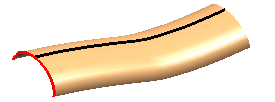
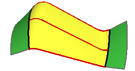
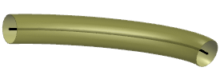

扫掠特征
如果构造几何体中一个或多个引导线(或轨迹线)，并至少含有一个截面线(基本与引导线垂直)，就可以使用扫掠特征。
-
扫掠 — 需要有1-150个截面线串以及1-3个引导线串。

-
沿引导线扫掠 — 需要一个引导线和一个截面线，并且不需要控制扫掠的方向。

-
变化扫掠 — 当有一个或多个截面，并且想沿着一个或多个轨迹线进行扫描时。

-
管道 — 当您有一个引导线，并且想以恒定的内径及外径进行扫掠。不包含在这些课程中。
